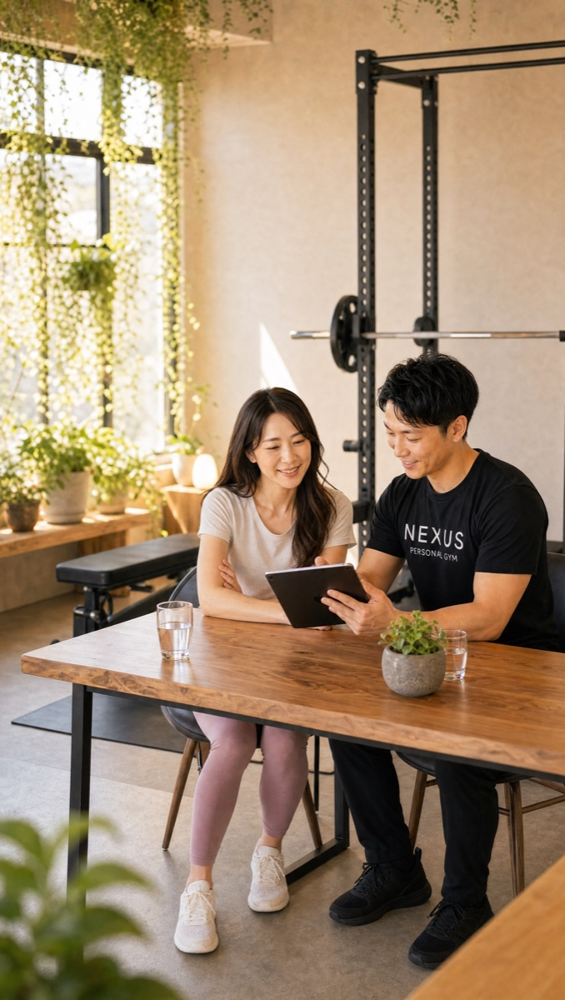

この店舗の特徴

NEXUS大宮店は、東日本最大級のターミナル・大宮駅の東口から徒歩圏にある完全個室パーソナルジムです。最大の特徴は、NEXUSにとって「埼玉県への初出店」であること。ご提供するのはまったく新しい方法ではなく、都内・神奈川の系列約70店舗で磨かれてきた指導メソッドそのもので、全トレーナーが3ヶ月の自社教育を修了してデビューします。系列の月島店は★5.0（172件）、練馬店は★5.0（95件）という高評価で、オープン直後の大宮店もGoogle口コミ★5.0をいただいています（2026年7月時点）。大宮駅は浦和・上尾・川越・春日部方面からも乗り換えなしで通える求心力があり、買い物や用事のついでに立ち寄れます。オープン直後で希望の時間帯が取りやすく、ウェア・タオル・プロテインまで無料の手ぶらOK、毎日8:00〜23:00・LINE予約で続けられます。
大宮エリアでパーソナルジムをお探しの方へ
大宮でパーソナルジムをお探しの方へ。多くの路線が集まる大宮駅の周辺にも、24時間型のマシンジムはあります。ただ「使い方が分からず、忙しさにまぎれて続かなかった」という方は少なくありません。NEXUS大宮店は、完全個室でトレーナーと一対一で進めるパーソナルジムです。器具の使い方や身体の動かし方を丁寧に確認しながら進めるので、運動が苦手な方や初めての方でも、置いていかれる心配がありません。買い物にも便利でにぎわう大宮区の中心で、忙しい毎日のなかでも続けやすい通い方を一緒に考えます。仕事や用事の都合に合わせて予約できるので、続けることそのものが負担になりにくい設計です。まずは無料体験から、ご自身のペースに合うかどうかを確かめてみてください。
Price料金プラン
入会金は通常55,000円、無料体験当日入会で15,000円（税込）に割引。AI食事指導は月額3,000円（税込）。全店舗共通の料金です。
Reviewsお客様の声
出典：Google マップ
NEXUS大宮店は埼玉県初のNEXUS店舗。全国約70店舗で実証された完全個室×手ぶらOKのパーソナルジムが大宮に上陸しました。オープン直後から「体験の丁寧なカウンセリングで、無理のないスタートが切れた」といった声をいただき、Google口コミは★5.0。埼玉に初上陸したNEXUSとして、これからも地元・大宮で口コミを重ねてまいります。
NEXUSは全国約70店舗・会員継続率96%。都内系列の月島店が★5.0（172件）、練馬店が★5.0（95件）の評価をいただいており、ブランドとしての指導品質は各店で共有されています。
体験のときから、こちらの目標や不安をとても丁寧にカウンセリングしてもらえました。運動が久しぶりで不安でしたが、いきなり追い込むのではなく、今できるところから無理のないスタートを切らせてもらえて安心しました。埼玉で完全個室のジムを探していたので、大宮にできて嬉しいです。
Access Route大宮駅からのアクセス
JR・東武・ニューシャトル 大宮駅が最寄りです。さいたま市にある完全個室の隠れ家ジムで、駅から徒歩圏内。大きな看板を出していないため、初めての方には無料体験のご予約時にLINEで分かりやすい順路をご案内します（〒330-0845 埼玉県さいたま市大宮区仲町1丁目48-2 あひか第2ビル402）。
アクセス
- 店舗名
- NEXUSパーソナルジム 大宮店
- 住所
- 〒330-0845
埼玉県さいたま市大宮区仲町1丁目48-2 あひか第2ビル402 - 最寄り駅
- JR・東武・ニューシャトル 大宮駅（東口 徒歩圏）
- 営業時間
- 毎日 8:00〜23:00
- 電話番号
- 050-1790-8499
大宮店のよくある質問
Q大宮に完全個室のパーソナルジムはありますか？+
Q埼玉に他のNEXUS店舗はありますか？+
Q浦和・川越方面からも通えますか？+
よくある質問（全店共通）
料金・制度などNEXUS全店に共通するご質問です。さらに詳しくは110問のFAQをご覧ください。
Q料金はいくらですか？+
Q手ぶらで通えますか？+
Qキャンセルはいつまでできますか？+
Q食事指導はありますか？+
Qトレーナーはどんな人ですか？+
Q女性会員は多いですか？+
Q体験の流れは？+
NEXUSパーソナルジムの特徴・料金をもっと見る
近隣の店舗
埼玉県にあるNEXUSの店舗は、下記の店舗一覧からお近くの店舗をお探しいただけます。
埼玉県の店舗一覧を見る